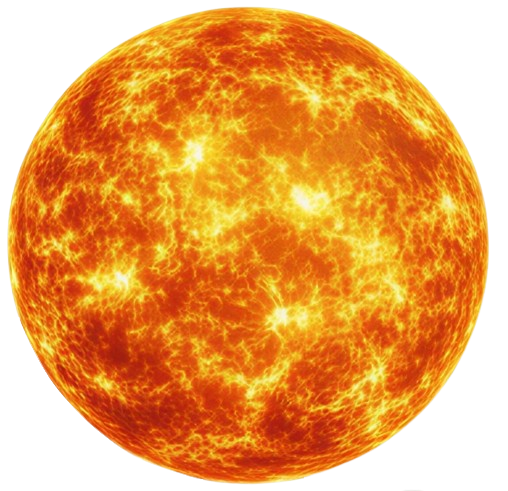
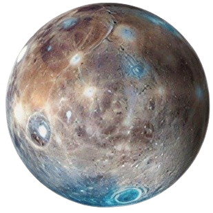
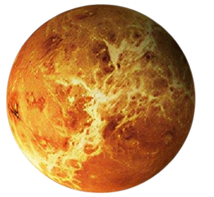
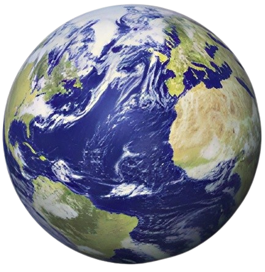
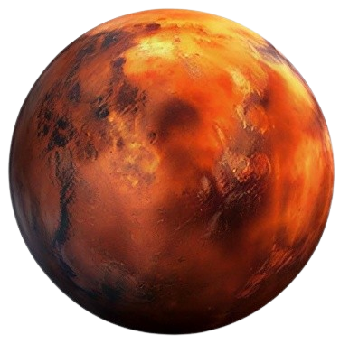
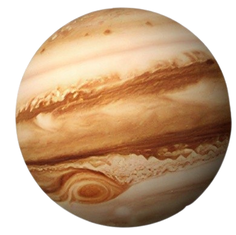
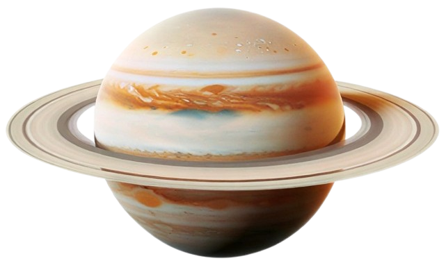
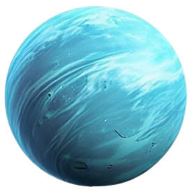
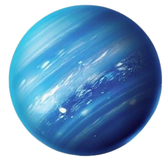

A Journey from the Sun to the Edge of Space

The Sun formed 4.6 billion years ago from a collapsing cloud of gas and dust. It became the gravitational anchor of the solar system, pulling every planet, moon, and asteroid into orbit around it.
✦ Fun Fact: The Sun contains 99.86% of all the mass in the solar system. Every planet combined makes up just the remaining 0.14%.

Mercury has been observed since ancient times. NASA's Mariner 10 gave us our first close-up in 1974, and the MESSENGER spacecraft later orbited it from 2011 to 2015, revealing a heavily cratered world with a surprisingly large iron core.
✦ Fun Fact: Despite being closest to the Sun, Mercury is not the hottest planet. Without an atmosphere to trap heat, temperatures swing from 430°C during the day to −180°C at night.

Venus was once considered Earth's twin. The Soviet Venera probes landed there in the 1970s, enduring crushing pressure and acid clouds long enough to send back surface images of a volcanic, hellish landscape unlike anything on Earth.
✦ Fun Fact: Venus rotates backwards and so slowly that a single Venusian day (243 Earth days) is actually longer than its year (225 Earth days).

Earth is the only planet known to harbour life. It developed a protective magnetic field and an oxygen-rich atmosphere over billions of years. The Apollo missions from 1969 to 1972 remain the only crewed expeditions to another world.
✦ Fun Fact: Earth is the densest planet in the solar system and the only one not named after a mythological god. The name simply comes from Old English words meaning "ground".

Mars has been the target of more missions than any other planet. Evidence of ancient river valleys and lake beds suggests it was once warmer and wetter. The Perseverance rover is currently searching for signs of ancient microbial life.
✦ Fun Fact: Mars is home to Olympus Mons, the tallest volcano in the solar system — standing three times the height of Mount Everest at around 21.9 km tall.

Jupiter's storm systems have been visible through telescopes since the 17th century. Its enormous gravity acts as a shield for the inner solar system, deflecting incoming asteroids. The Juno probe has been studying its deep atmosphere since 2016.
✦ Fun Fact: Jupiter's Great Red Spot is a storm that has been raging for over 350 years — and it is large enough for the entire Earth to fit inside it with room to spare.

Saturn's rings were first observed by Galileo in 1610, though he mistook them for "ears". The Cassini-Huygens mission (2004–2017) was the most detailed study of Saturn ever, discovering active geysers on Enceladus and methane lakes on Titan.
✦ Fun Fact: Saturn is the least dense planet in the solar system — less dense than water. In theory, if you found a bathtub large enough, Saturn would float in it.

Uranus was the first planet discovered with a telescope, spotted by William Herschel in 1781. Voyager 2 is the only spacecraft to have ever visited, flying past in 1986. A dedicated orbiter mission is currently being planned for the 2030s.
✦ Fun Fact: Uranus rotates on its side with a 98-degree tilt, meaning it rolls around the Sun like a ball. Each of its seasons lasts 21 years.

Neptune was discovered in 1846 through maths before it was even seen — astronomers noticed oddities in Uranus's orbit and calculated a hidden planet must be causing them. Voyager 2 visited in 1989 and remains the only spacecraft to have reached it.
✦ Fun Fact: Neptune has the fastest winds in the solar system, reaching over 2,100 km/h — fast enough to break the sound barrier twice over in its −200°C atmosphere.